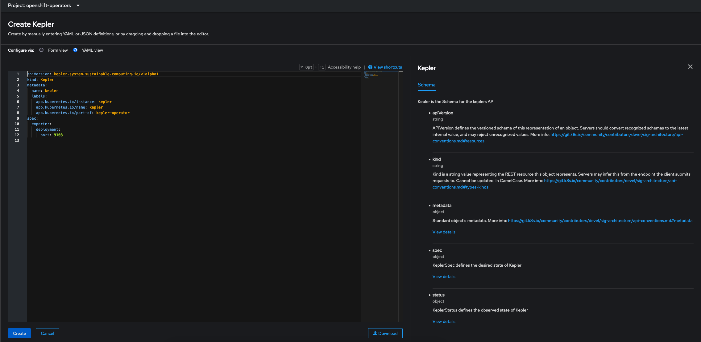

Kepler Operator on Kind
Requirements
Before you start make sure you have:
dockerinstalled and configured to run as non-root by defaultkubectlinstalledkindinstalled- Clone the
kepler-operatorrepository - Sign in as
kubeadminor a user withcluster-adminrole
Note
Your controller will automatically use the current context in your kubeconfig file (i.e. whatever cluster kubectl cluster-info shows).
Run a kind cluster locally
cd kepler-operator
make cluster-up
Run kepler-operator
-
You can use the image from quay.io to deploy kepler-operator.
make deploy OPERATOR_IMG=quay.io/sustainable_computing_io/kepler-operator:[VERSION] kubectl apply -k config/samples/ -
Alternatively, if you like to setup cluster, build and use your own images
make freshThe above will create a kind cluster build and push operator and bundle images to local registry.
Set up Grafana Dashboard
Using GRAFANA_ENABLE=true and PROMETHEUS_ENABLE=true when running make cluster-up configures the kube-prometheus monitoring stack in the namespace monitoring.
To access the Grafana Console locally on the browser port-forward on 3000 using the following command:
kubectl port-forward svc/grafana 3000:3000 -n monitoring
Note
Grafana Console can be accessed on http://localhost:3000
Service Monitor
For kube-prometheus to scrape kepler-exporter service endpoint you need to configure a service monitor.
Note
By default kube-prometheus does not let you scrape services deployed in namespaces other than monitoring.
So if you are running Kepler outside monitoring follow this to set up Prometheus to scrape all namespaces.
kubectl apply -n monitoring -f - << EOF
apiVersion: monitoring.coreos.com/v1
kind: ServiceMonitor
metadata:
labels:
app.kubernetes.io/component: exporter
app.kubernetes.io/name: kepler-exporter
sustainable-computing.io/app: kepler
name: monitor-kepler-exporter
spec:
endpoints:
- interval: 3s
port: http
relabelings:
- action: replace
regex: (.*)
replacement: $1
sourceLabels:
- __meta_kubernetes_pod_node_name
targetLabel: instance
scheme: http
jobLabel: app.kubernetes.io/name
namespaceSelector:
matchNames:
any: true
selector:
matchLabels:
app.kubernetes.io/component: exporter
app.kubernetes.io/name: kepler-exporter
EOF
Grafana Dashboard
To set up the Grafana dashboard follow these steps:
- Sign in localhost:3000 using
admin:admin -
Import default dashboard from Kepler operator repository

Uninstall the operator
To delete the CRDs, roles, roleBindings etc from the cluster:
make undeploy
Troubleshooting
Scrape all namespaces
kube-prometheus by default does not let you scrape services in namespaces outside monitoring. This is controlled by RBAC.
The clusterrole prometheus-k8s should have below policy to scrape services in all namespaces.
kubectl describe clusterrole prometheus-k8s
Name: prometheus-k8s
Labels: app.kubernetes.io/component=prometheus
app.kubernetes.io/instance=k8s
app.kubernetes.io/name=prometheus
app.kubernetes.io/part-of=kube-prometheus
app.kubernetes.io/version=2.45.0
Annotations: <none>
PolicyRule:
Resources Non-Resource URLs Resource Names Verbs
--------- ----------------- -------------- -----
endpoints [] [] [get list watch]
pods [] [] [get list watch]
services [] [] [get list watch]
ingresses.networking.k8s.io [] [] [get list watch]
[/metrics] [] [get]
nodes/metrics [] [] [get]
-
To customize the Prometheus after creating local cluster follow kube-prometheus documentation on Customizing Kube-Prometheus
-
Make sure you apply this jsonnet to ensure Prometheus scrapes services in all namespaces.